Quiénes Somos
La Mesa de Ayuda HP es el punto central de contacto para soporte técnico, dedicada a proporcionar asistencia eficiente y profesional a todos los usuarios de sistemas judiciales y equipamiento tecnológico.
Este documento establece los parámetros formales de atención, trazabilidad y tiempos máximos de respuesta para las solicitudes ingresadas a la Mesa de Ayuda HP Inc., garantizando atención oportuna y alineada al contrato vigente con el Poder Judicial.
Objetivo
Definir el proceso y tiempos formales para la atención de requerimientos e incidencias gestionadas en MauWeb, asegurando cumplimiento del SLA establecido para el servicio.
Alcance
Aplica a todas las solicitudes ingresadas por el Poder Judicial hacia la Mesa de Ayuda HP Inc., desde su creación hasta su cierre conforme por parte del usuario.
Compromisos de Contacto y Tiempos de Respuesta
1. Contacto Inicial
- El agente debe llamar al número indicado y presentarse con protocolo formal.
- Se registra en MauWeb la hora exacta de inicio de soporte.
2. Intentos Fallidos
- Realizar 3 intentos de contacto telefónico.
- Registrar fecha y hora de cada intento.
3. Notificación de Inactividad
- En caso de no contacto, enviar correo al usuario solicitando respuesta.
- Copiar siempre a la Jefatura de Mesa de Ayuda.
4. Anulación Automática
- El requerimiento se anula si no hay respuesta del usuario dentro de 2 horas.
- El usuario puede generar un nuevo folio si persiste el problema.
Acuerdos de Nivel de Escalación
Estos escalamientos permiten atención especializada sin perder trazabilidad del caso.
- Aplica a requerimientos Urgentes o Prioridad Alta.
- Se envía correo a áreas responsables del contrato.
- Debe informarse avance en el menor tiempo posible.
📧 escalaimiento_soportepc@pjud.cl
La matriz de priorización permite clasificar los requerimientos según su impacto y urgencia, asegurando que los recursos de Mesa de Ayuda se enfoquen adecuadamente.
Categorías de Prioridad
- Prioridad Alta (Urgente): Incidencias que detienen completamente el trabajo del usuario o del tribunal.
- Prioridad Media: Problemas que afectan tareas pero con alternativas temporales.
- Prioridad Baja: Consultas, solicitudes menores o mejoras no críticas.
Criterios de Evaluación
- Impacto: Evaluación del daño operativo provocado por la falla.
- Urgencia: Tiempo máximo tolerable antes de afectar procesos judiciales.
- Recurrencia: Si el problema se presenta frecuentemente, aumenta la prioridad.
Matriz Base
Impacto Alto + Urgencia Alta → PRIORIDAD ALTA
Impacto Medio + Urgencia Alta → PRIORIDAD MEDIA
Impacto Bajo + Urgencia Baja → PRIORIDAD BAJA
La Mesa de Ayuda (Help Desk) de TI es el punto central de contacto para todos los usuarios. Operamos como el primer nivel de soporte para la Dirección de Tecnología, garantizando la continuidad operativa y la eficiencia en el uso de los recursos informáticos, con un enfoque especializado en el ecosistema HP.
Funciones y Responsabilidades Clave
- Gestión de requerimientos e incidentes, desde la recepción hasta el cierre.
- Solución de problemas (troubleshooting) en primer nivel y escalamiento oportuno.
- Soporte especializado para infraestructura y equipamiento HP.
- Documentación, mantenimiento de base de conocimientos y mejora continua del servicio.
Gestión de Requerimientos e Incidentes
Recepción y Registro: Gestionamos todas las solicitudes de soporte (incidentes, problemas técnicos y peticiones de servicio) a través de nuestros canales oficiales (por ejemplo, MauWeb). Cada solicitud es registrada y se le asigna un número de seguimiento.
Diagnóstico Inicial: Realizamos un diagnóstico inicial para identificar la naturaleza del problema o la necesidad del requerimiento, priorizando según criticidad e impacto en la operación.
Solución de Problemas (Troubleshooting)
Resolución en Primer Nivel: Resolvemos la mayor parte de los incidentes técnicos directamente, incluyendo problemas con software de productividad, conectividad de red y fallas comunes en equipos de escritorio y portátiles HP.
Escalamiento: Cuando un problema excede la capacidad de resolución de primer nivel, lo escalamos de manera inmediata y documentada a los equipos de soporte de segundo nivel (administración de sistemas, redes, desarrollo, entre otros), manteniendo informado al usuario.
Soporte de Infraestructura HP
Ofrecemos asistencia técnica especializada para el mantenimiento, configuración y solución de fallas en el hardware y periféricos de la marca HP (incluyendo estaciones de trabajo, impresoras y laptops), asegurando su óptimo rendimiento y disponibilidad.
Documentación y Mejora Continua
Mantenemos actualizada la base de conocimientos con las soluciones a problemas recurrentes, con el fin de agilizar futuros soportes y entregar respuestas consistentes a los usuarios.
Monitoreamos tendencias de fallas y requerimientos para proponer mejoras en procesos, herramientas y capacitación de usuarios, contribuyendo a la mejora continua del servicio de la Mesa de Ayuda HP.
Objetivo: Documentar la forma correcta de atender las solicitudes de servicio generadas por el cliente Poder Judicial a la Mesa de Ayuda de HP Inc., asegurando un servicio homogéneo, trazable y alineado con los acuerdos de nivel de servicio (SLA).
Alcance, Asignaciones y Responsabilidades
- Este procedimiento debe cumplirse por todos los integrantes del proceso de Mesa de Ayuda, desde el ingreso de una solicitud de servicio en MauWeb hasta el cierre conforme por parte del usuario.
- Aplica a todas las unidades de servicio que estén en contrato vigente y registradas en la plataforma MauWeb.
- Es de cumplimiento obligatorio para todos los integrantes que presten colaboración a la Mesa de Ayuda de HP Inc.
Términos y Definiciones
- Requerimiento: Petición de una acción o recurso necesario para el correcto uso del equipo, cuya ausencia dificulta la labor diaria del usuario.
- Incidencia: Acción o evento inesperado que interrumpe o imposibilita la labor diaria del usuario.
- Solucionado: Estado utilizado por el agente MDA para indicar que el requerimiento fue atendido y se completaron las acciones técnicas de soporte.
- Cerrado: Estado final del requerimiento, gestionado exclusivamente por el usuario cuando queda conforme con la solución aplicada.
- Anulado: Opción del agente MDA cuando corresponde descartar el requerimiento (el usuario puede objetar este estado y dejar el caso en condición pendiente).
- Invalidado: Opción del usuario para anular el requerimiento que ha creado.
- Objetado: Opción del usuario cuando no está conforme con la solución; el folio es devuelto a la bandeja del agente que efectuó la atención.
- Derivado: Estado que indica cambio de responsable o área de atención para un ticket.
- SCO: Servicio de Continuidad Operativa.
- Remasterización: Proceso de volver a cargar la imagen del sistema operativo para corregir errores causados por mala manipulación o corrupción del sistema.
- VNC: Programa de software de escritorio remoto que provee acceso remoto bidireccional entre computadoras, disponible para los sistemas operativos más comunes.
Normas Básicas: Antes de iniciar las actividades
- Todo el personal de atención de nivel 1 de la Mesa de Ayuda de HP Inc. debe conocer las características del servicio establecidas en el catálogo de servicios.
- Los catálogos de servicios deben mantenerse como información documentada, disponible para los agentes de la Mesa de Ayuda para su consulta permanente.
- Los agentes deben tener claramente identificado el SLA de atención de los requerimientos, considerando que el tiempo se mide desde que el requerimiento llega a su bandeja en MauWeb.
- Todos los agentes deben presentarse con el siguiente saludo: “Buenas <<días, tardes, noches>>”.
-
El saludo debe continuar indicando origen y motivo de la llamada:
“Le habla <<Nombre>>, de la Mesa de Ayuda HP Inc., lo llamo por el requerimiento <<número de folio>> asociado al problema reportado <<breve descripción>>.” - Si el agente logra comunicación con el usuario, debe dejar registro en MauWeb indicando la hora en que comenzó el soporte.
- El agente debe verificar que los datos de contacto entregados por el usuario (teléfono celular, red fija, correo, etc.) sean correctos y estén actualizados.
- Si el agente no logra comunicación con el usuario, debe dejar constancia en MauWeb, por ejemplo: “Se realiza llamado al número indicado como contacto el <<fecha>> a las <<hora>> sin éxito.”
Normas Básicas: Durante la actividad
- Los agentes deben atender únicamente a un usuario por cada llamado, permitiendo entregar una atención personalizada y concentrada.
- Los agentes no deben utilizar sus teléfonos móviles ni mantener distracciones mientras estén atendiendo un caso.
- El agente debe verificar el número de serie del equipo para comprobar que se encuentra dentro del contrato correspondiente.
- El agente debe tener acceso al repositorio con procedimientos y ejecutables necesarios para realizar el soporte.
- El agente debe asegurarse de utilizar procedimientos actualizados, validados y alineados con las directrices de la Mesa de Ayuda y del cliente.
Normas Básicas: Al finalizar la actividad
- Si el soporte no se puede completar porque los pasos del procedimiento no solucionan el problema, se debe realizar un escalamiento al soporte de Nivel 2 (N2) para asesoría y revisión avanzada.
- Si el soporte N2 no logra detectar el problema o no se consigue solución, se debe escalar a Nivel 3 (N3), derivando el requerimiento y enviando correo de respaldo que detalle las acciones realizadas y los resultados obtenidos sin éxito.
- Si el soporte resulta exitoso, el agente debe comunicarse nuevamente con el usuario, solicitar que realice pruebas y obtener su aprobación explícita.
- Una vez que el usuario da su aprobación, el agente debe informar que finalizará la sesión remota, dejará de visualizar la pantalla del usuario y procederá a marcar el requerimiento como “Solucionado” en MauWeb, quedando a la espera de que el usuario lo cierre.
Escalamiento de solicitudes de servicio a Mesa de Ayuda
Todo requerimiento creado hacia la Mesa de Ayuda en condición Urgente o con Prioridad Alta puede ser escalado por los funcionarios a través del siguiente correo:
escalamiento_soportepc@pjud.cl
En este grupo de correo se encuentran los integrantes de cada una de las áreas responsables que pueden dar solución inmediata al caso. Dichos integrantes tienen el deber de responder a la brevedad, informando avance o solución del requerimiento que fue escalado.
Sistemas Internos y Herramientas
La Mesa de Ayuda HP utiliza los siguientes sistemas internos y herramientas para la gestión eficiente de requerimientos y atención a usuarios:
ProManager
Plataforma principal para registro y seguimiento de incidencias y solicitudes.
MAUWEB
Sistema interno de Mesa de Ayuda para gestión de casos y documentación.
Gestión de Requerimientos SCO
Hoja de cálculo para seguimiento y control de requerimientos.
Sistema de Comentarios Predeterminados
Guía de Soporte HP - Herramienta creada por agentes para generar comentarios estandarizados en MauWeb.
HP PartSurfer
Herramienta para verificar información de equipos mediante número de serie, proporcionando detalles de piezas y componentes.
Consultor de Equipos en Contrato
Plataforma para consultar el estado y vigencia de equipos que se encuentran bajo contrato activo.
SITCO – Sistema Informático de Tramitación de Cobranza
Procedimiento oficial para la correcta configuración y uso del sistema SITCO del Poder Judicial, basado en la documentación interna entregada. Este módulo describe paso a paso la preparación del navegador, permisos y verificaciones requeridas.
Paso 1: Ubicar el acceso SITCO en el Escritorio
Al iniciar sesión en el equipo, en el Escritorio debe encontrarse el acceso directo “SITCO”, tal como se muestra en la imagen.

Paso 2: Abrir SITCO mediante Google Chrome
Por políticas del Poder Judicial, SITCO debe ejecutarse exclusivamente en Google Chrome.
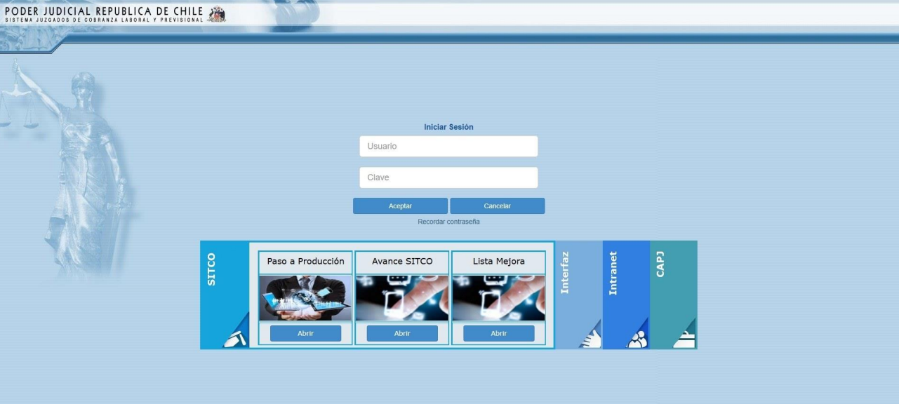Paso 3: Permitir contenido No Seguro y Configuración de Sitios
Chrome puede mostrar advertencia de “Sitio No Seguro”. Debes ingresar a Configuración del sitio y otorgar permisos completos.
- Ir a Permisos del sitio.
- Habilitar “Contenido no seguro”.
- Habilitar descargas, dispositivos y accesos relevantes.
Detalle visual de permisos requeridos
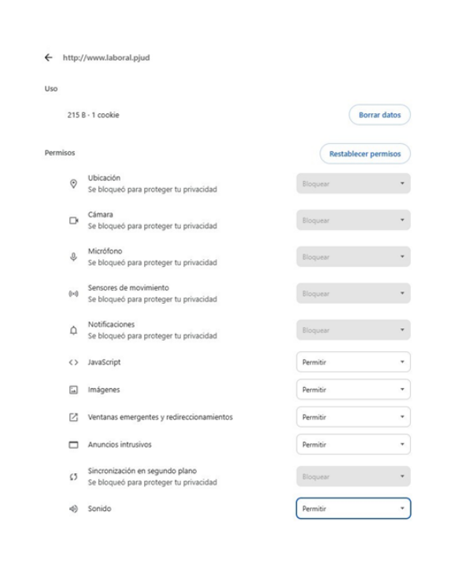 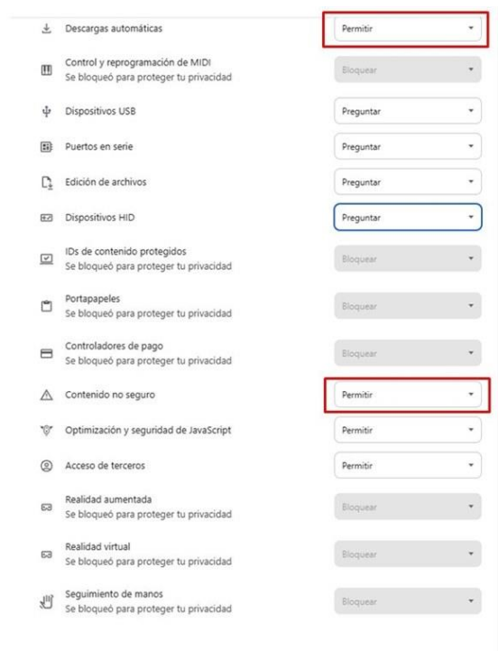Paso 4: Pruebas con usuario y apertura de documentos
Se realizan pruebas funcionales y se indica al usuario abrir documentos Word con clic derecho → “Abrir siempre con el visualizador del sistema”.
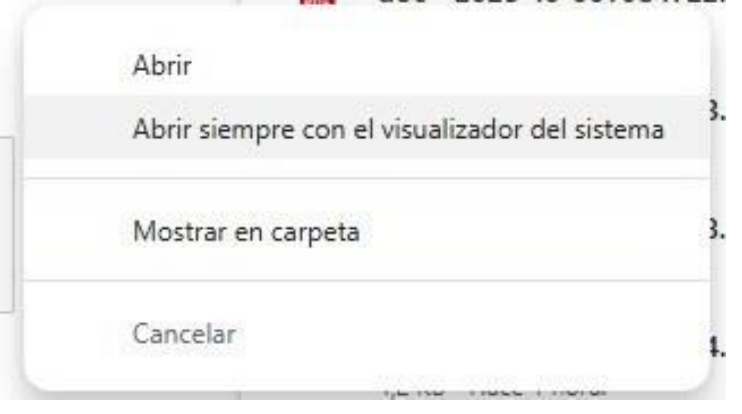Paso 5: Restablecer Chrome y verificar versión 32 bits
Es obligatorio verificar que Chrome esté ejecutándose en su versión 32 bits, según lo solicitado por PJUD.
- Ir a Configuración → Restablecer configuración.
- Asegurar que Chrome esté actualizado y ejecutándose en 32 bits.
Descargar Procedimiento Oficial en PDF
Para referencia completa, puedes descargar el documento original aquí:
Descargar Procedimiento SITCO (PDF)SITLA – Sistema Informático de Tramitación Laboral
El sistema SITLA permite gestionar y tramitar causas laborales del Poder Judicial de manera electrónica a través del navegador Google Chrome. A continuación se detalla el procedimiento oficial de uso y configuración según el documento interno del PJUD.
Paso 1: Ubicar el acceso SITLA en el Escritorio
Una vez iniciada la sesión en el equipo, en el escritorio debe encontrarse el ícono “SITLA”, según lo descrito en el procedimiento oficial.
Paso 2: Abrir SITLA mediante Google Chrome
Por políticas del Poder Judicial, SITLA debe ejecutarse exclusivamente a través de Google Chrome, tal como se especifica en el procedimiento.
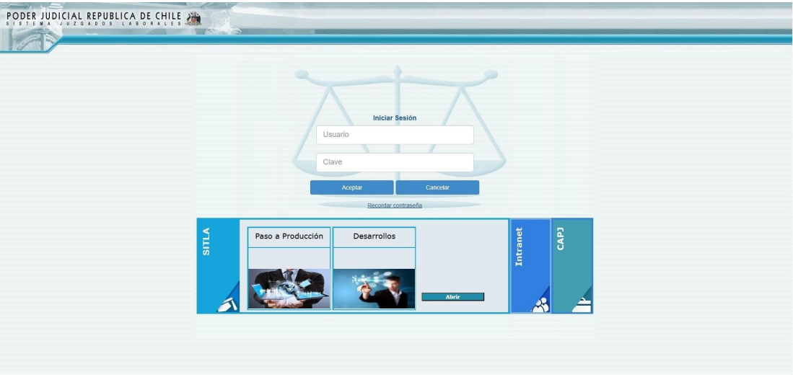Paso 3: Permitir contenido No Seguro y Configuración del Sitio
Chrome puede mostrar advertencias de “sitio no seguro”. Debes ingresar a Configuración del sitio y habilitar todos los permisos necesarios:
- Descargas automáticas → Permitir
- Contenido no seguro → Permitir
- Controladores USB / HID → Ajustar según corresponda
- Acceso a portapapeles, archivos y dispositivos → Permitir
Las imágenes a continuación muestran la configuración recomendada:
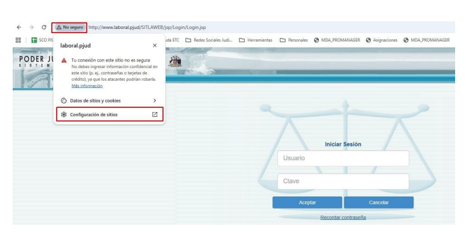 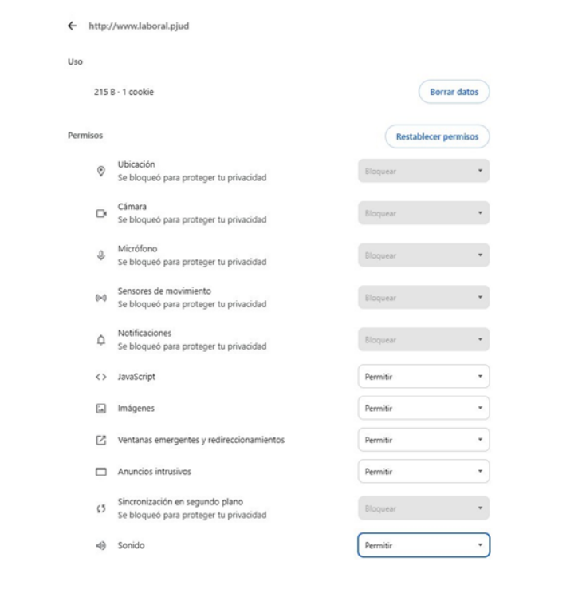Paso 4: Prueba con el usuario y apertura de documentos
Se recomienda realizar pruebas funcionales en presencia del usuario. Cuando se abran documentos Word, se debe indicar:
Clic derecho → "Abrir siempre con el visualizador del sistema"
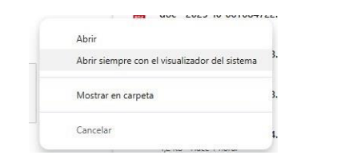Paso 5: Restablecer Google Chrome y verificar versión 32 Bits
Según el procedimiento oficial, es obligatorio validar que Chrome esté ejecutándose en 32 bits. Además, debe realizarse un restablecimiento de configuración.
- Ir a Configuración → Restablecer configuración
- Comprobar versión del navegador


Descargar Procedimiento Oficial en PDF
Puedes descargar la documentación original del procedimiento SITLA:
Descargar Procedimiento SITLA (PDF)SIAGJ – Sistema Reforma Procesal Penal
Procedimiento oficial para la correcta configuración, carga de módulos y pruebas del sistema SIAGJ, basado íntegramente en la documentación técnica proporcionada.
Paso 1: Ejecutar acceso directo SIAGJ
Una vez ejecutado el archivo de configuración V12, en el Escritorio debe encontrarse el acceso directo SIAGJ. Ejecútalo haciendo doble clic.
Paso 2: Ejecutar complemento en todos los sitios web
Al abrir SIAGJ se mostrará una ventana con opciones de ejecución de complementos. Haz clic derecho en la barra superior de Internet Explorer y selecciona:
"Ejecutar el complemento en todos los sitios web"
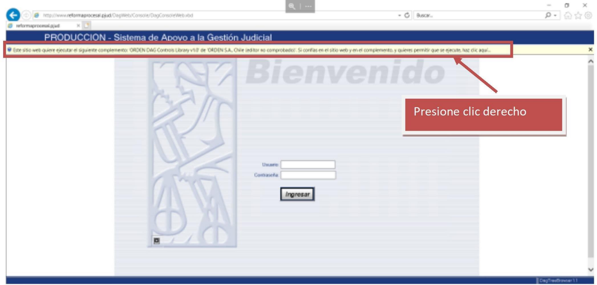Habilitar complementos en Internet Explorer
Al aparecer la ventana emergente, presiona Ejecutar para instalar los complementos. Luego ve a:
- Herramientas → Administrar complementos
- En “Mostrar”, seleccionar: Todos los complementos
- Habilitar todos los complementos listados en el panel derecho
Paso 3: Cerrar y volver a abrir Internet Explorer
Luego de activar todos los complementos, cierra Internet Explorer y vuelve a abrir SIAGJ.
Ingresa con tus credenciales de Mesa de Ayuda y selecciona Ingresar.
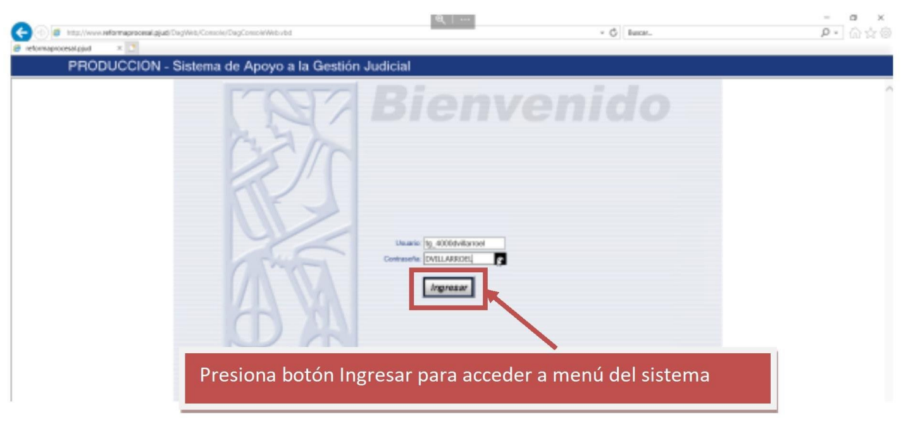Paso 4: Descargar módulos del menú principal
Una vez dentro del menú principal de SIAGJ, debes descargar todos los módulos desde R.P.A hasta Ingreso, según lo indicado en la documentación.
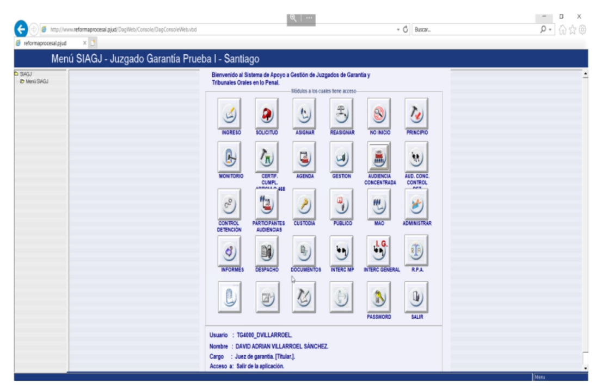Paso 5: Pruebas de Gestión y apertura de documentos
Accede al módulo de Gestión para realizar las pruebas de funcionamiento:
- Abrir un Word de prueba
- Seleccionar “Rol Interno”
- Ingresar número de rol: 77
- Año: 2021
- Presionar tecla Tab para cargar datos
Paso 6: Validar ventanas emergentes y apertura de Word
Aparecerán ventanas emergentes para cargar información. Selecciona Aceptar en cada una.
Luego, entra al apartado Historia, haz clic derecho en la opción:
"Fijar día y hora para audiencias" → “Ver documento Word”
El sistema debe abrir correctamente el archivo Word.
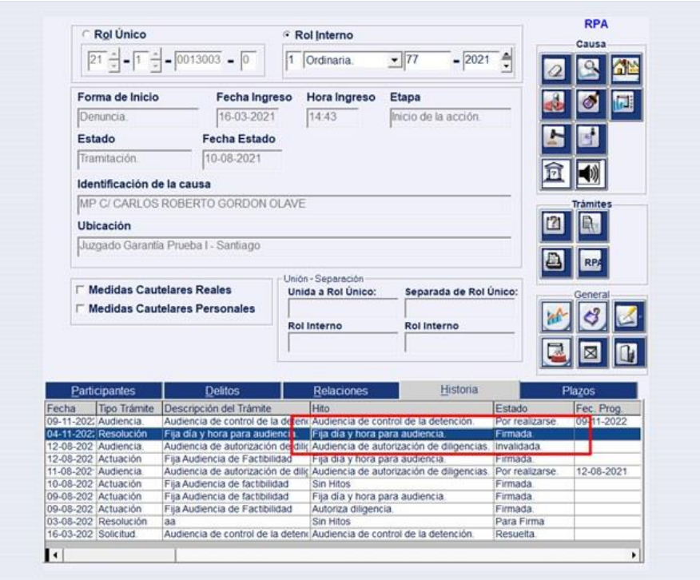
Video de Configuración
Puedes consultar el video oficial de apoyo (según PDF):
Ver video de configuración SIAGJDescargar PDF oficial
Descarga el procedimiento oficial tal como fue entregado:
Descargar Procedimiento SIAGJ (PDF)Gestión Penal – Sistema Judicial Penal
Procedimiento oficial para soporte y configuración del sistema Gestión Penal del Poder Judicial de Chile. Este módulo describe paso a paso el acceso, configuración de permisos, uso de módulos principales y ejecución de la extensión JAPP requerida para la firma de trámites.
Descripción General
El Sistema de Gestión Penal permite la tramitación digital de causas penales, garantizando trazabilidad, seguridad de la información y seguimiento en tiempo real. El soporte técnico debe verificar acceso web, configuración de navegador, permisos y funcionamiento de extensiones locales.
Paso 1: Ingresar al Sistema Gestión Penal
Desde el equipo del usuario, acceder al sistema web Gestión Penal, tal como lo muestra la siguiente imagen:
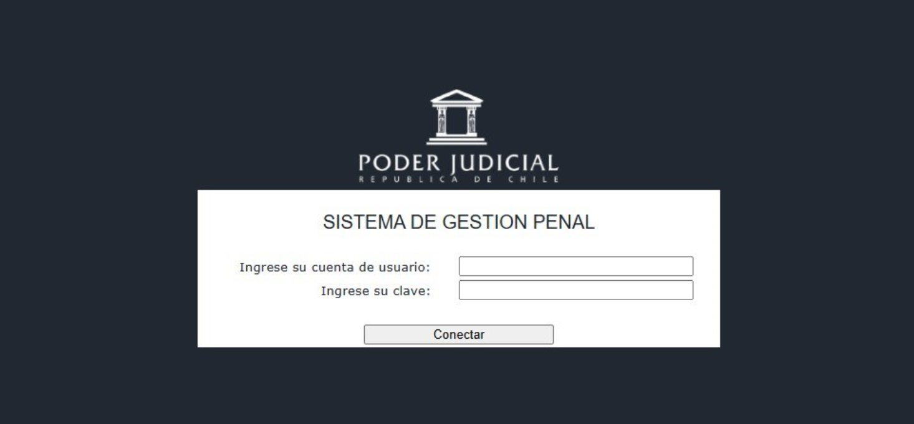Paso 2: Acceder mediante Google Chrome
Por políticas del Poder Judicial, Gestión Penal debe ejecutarse exclusivamente en Google Chrome. El usuario debe ingresar con sus credenciales institucionales.
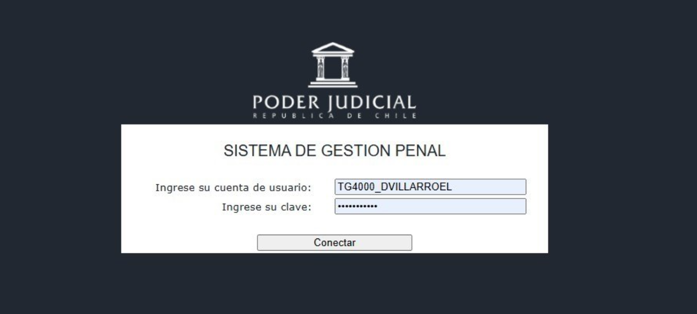Paso 3: Permitir contenido No Seguro (Configuración del Sitio)
Chrome puede alertar “Sitio No Seguro”. Se debe acceder a Configuración del sitio y habilitar todos los permisos necesarios:
- Permitir contenido no seguro.
- Permitir descargas.
- Permitir uso de extensiones y ventanas emergentes.
Paso 4: Ingresar a la Bandeja de Firma
Una vez dentro del sistema, dirigirse al módulo Bandeja de Firma → Firma de Trámites (Segpres).
Cambiar la opción de filtro: “Trámites: Todos (sin medidas regulares)” Luego seleccionar Buscar causas para firmar.
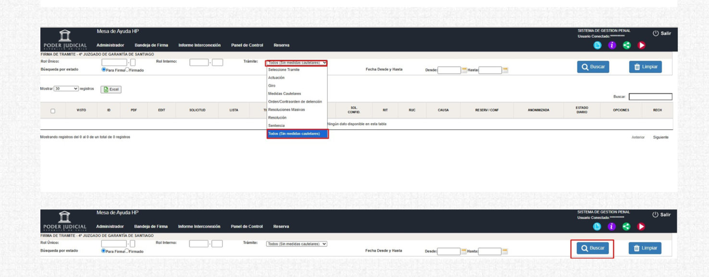Paso 5: Activar extensión JAPP desde Disco Local C
La extensión JAPP es obligatoria para ejecutar la firma de documentos. Se debe activar de la siguiente manera:
- Ir a Disco Local C:\Japp.
- Hacer clic derecho → Ejecutar.
- Verificar su ejecución en los iconos ocultos de la barra de tareas.
Paso 6: Configurar Word para compatibilidad
Para evitar errores al abrir documentos judiciales, se debe ajustar Word:
- Abrir un documento en blanco.
- Ir a Opciones → Guardar.
- Cambiar “Optimizar para compatibilidad”.
Paso 7: Abrir causa en Word desde el sistema
Finalmente, se abre un documento directamente desde Gestión Penal para verificar:
- Que el archivo abra correctamente en Word.
- Que permita edición.
- Que la firma funcione adecuadamente.
Importante: La edición del documento debe realizarla el usuario final.
Descargar Procedimiento Oficial en PDF
Documento original de soporte técnico:
Descargar Gestión Penal (PDF)SITFA – Sistema de Tribunales de Familia
Procedimiento oficial para la correcta configuración, carga de módulos y prueba funcional del sistema SITFA, basado íntegramente en el documento institucional.
Paso 1: Ejecutar acceso SITFA desde el Escritorio
Ejecutar el acceso directo SITFA ubicado en el Escritorio.
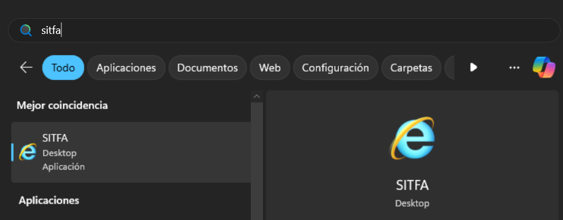Paso 2: Ingreso al sistema con credenciales
Ingresar usuario y contraseña institucional.

Paso 3: Seleccionar módulo Gestión
Desde el menú principal, seleccionar Gestión.
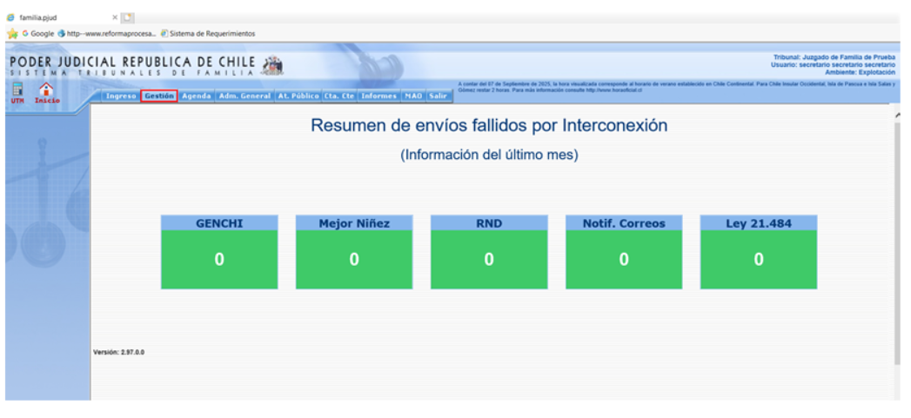Paso 4: Descargar módulos
Descargar todos los módulos desde el menú superior según el orden especificado.
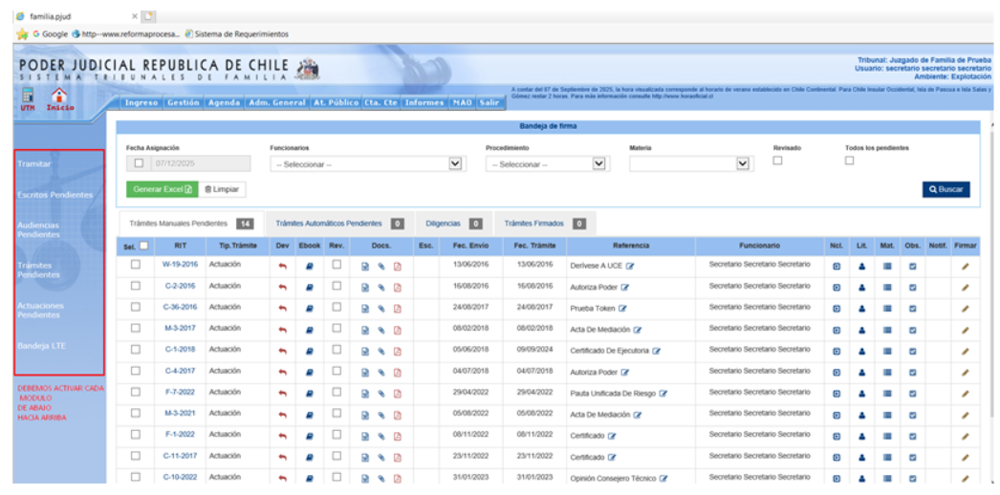Paso 5: Buscar causa de prueba
Ingresar la causa de prueba:
RIT: C – 25 – 2021
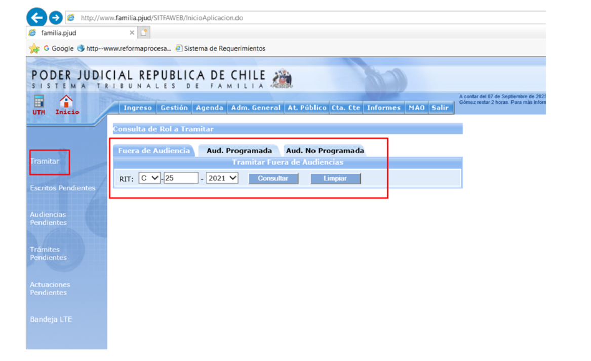Paso 6: Revisar trámites pendientes
Acceder a Trámites Pendientes y reproducir el trámite.
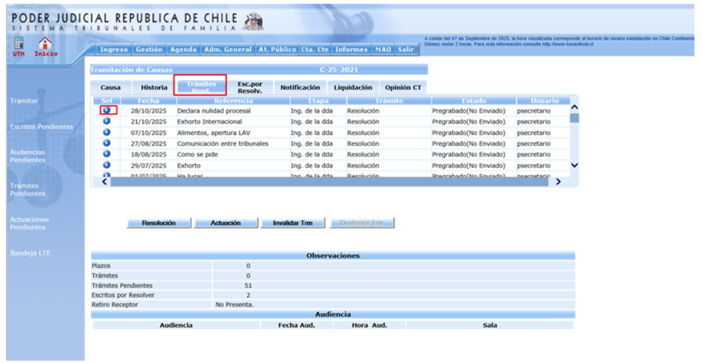Paso 7: Ingresar texto
Seleccionar Ingresar Texto.
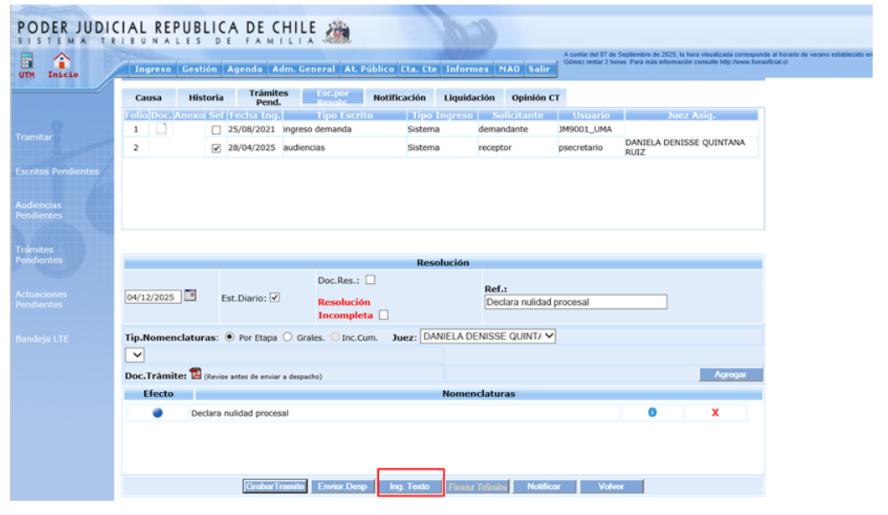Paso 8: Abrir Word y guardar cambios
Modificar el documento en Word, guardar y volver al sistema.
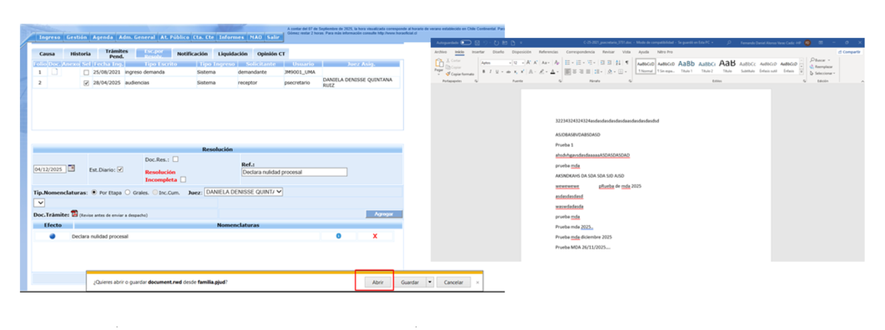Descargar Procedimiento Oficial SITFA
Descargar Procedimiento SITFA (PDF)SITCI – Sistema de Tramitación Civil
Procedimiento oficial para la correcta configuración, carga de módulos y pruebas del sistema SITCI, basado íntegramente en la documentación interna.
Paso 1: Ejecutar acceso SITCI desde el Escritorio
Ejecutar el acceso directo SITCI ubicado en el Escritorio.
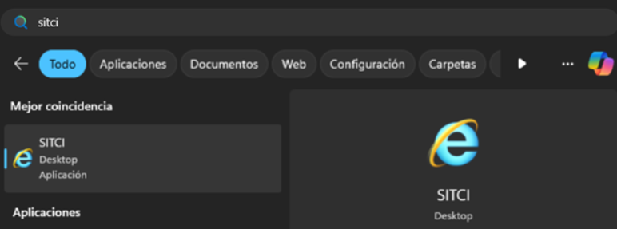Paso 2: Ingresar con credenciales
Ingresar usuario y contraseña institucional para acceder al sistema.
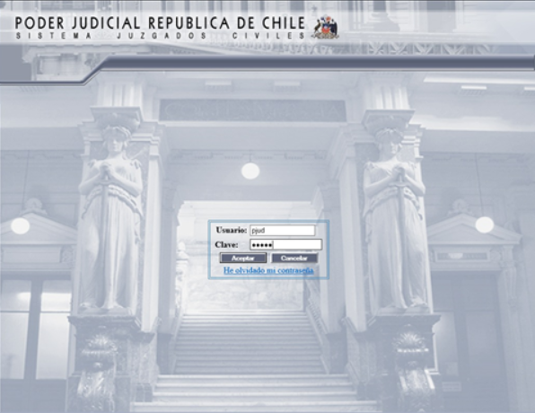Paso 3: Cargar módulos del sistema
Desde el menú principal, cargar todos los módulos en el orden recomendado.

Paso 4: Buscar causa de prueba
Ingresar la causa de prueba:
Rol interno de Tribunal: C – 25 – 2021
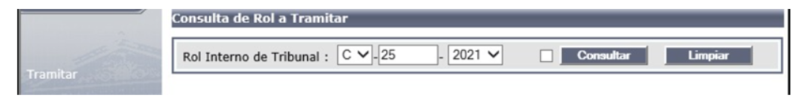Paso 5: Abrir Gestión y tramites pendientes
Acceder a Gestión y verificar funcionamiento del sistema.
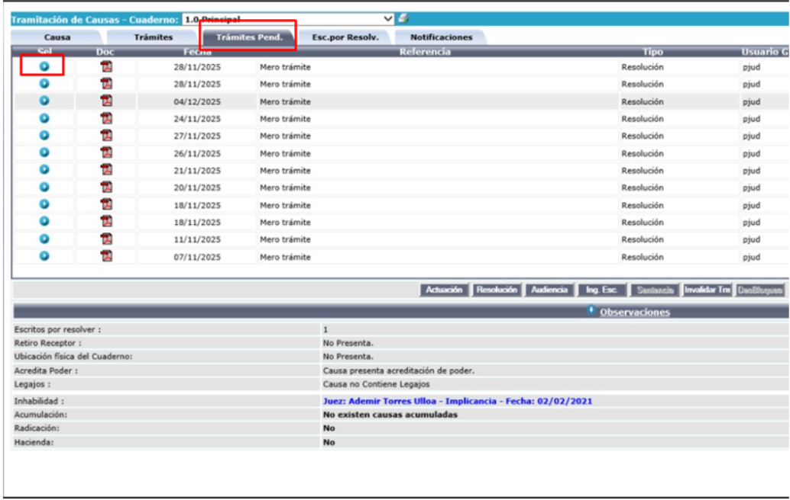Paso 6: Permitir Permisos| Abrir Word | Guardar cambios
Modificar un documento de ejemplo en Word, guardar y volver al sistema.
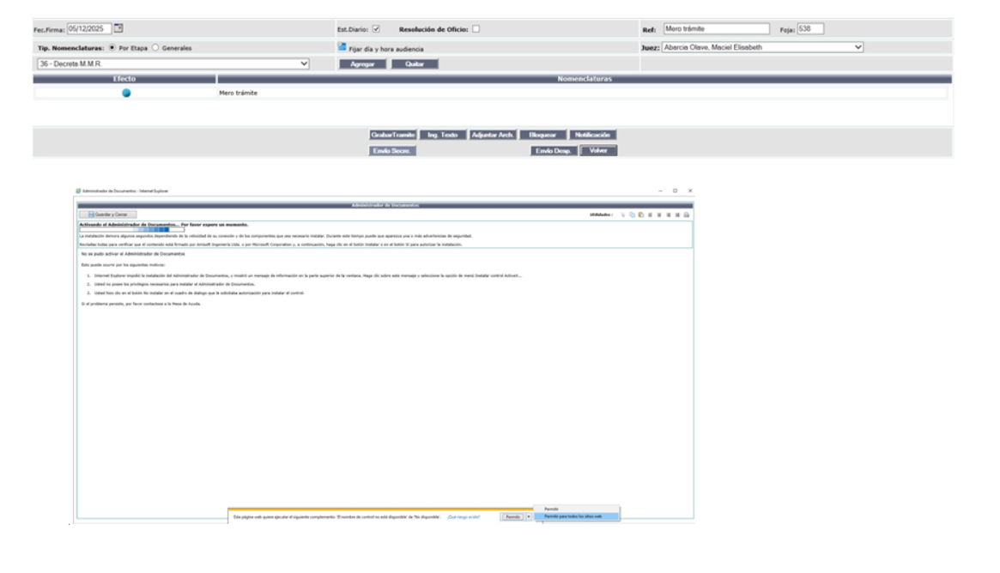 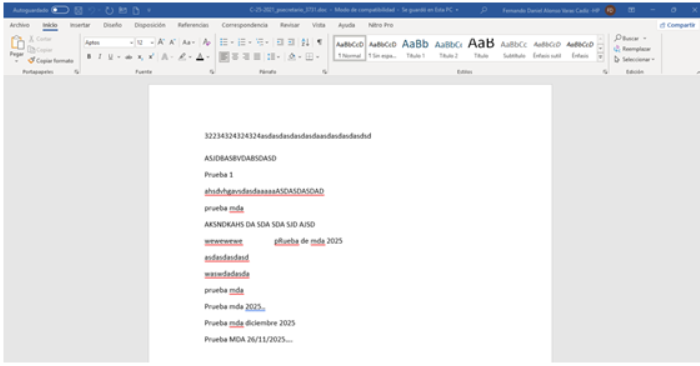Descargar Procedimiento Oficial SITCI
Descargar Procedimiento SITCI (PDF)Monito Web 2 – Sistema de Certificados Registro Civil
Procedimiento oficial para instalación, activación y configuración de Monito Web 2, utilizado para la emisión de certificados del Servicio de Registro Civil.
Paso 1: Instalar PDF24 y archivos del sistema
Desde el repositorio institucional, copiar la carpeta MonitoWEB al Escritorio y ejecutar:
- Instalador.bat
- Presionar una tecla cuando finalice
Paso 2: Verificar compatibilidad en Internet Explorer
Monito Web 2 utiliza IE11 en modo empresa. Es necesario validar la compatibilidad:
- Abrir Internet Explorer
- Ingresar: about:compat
- Confirmar carga de lista PJUD
Paso 3: Configurar opciones en el sitio oficial
Acceder a configuración avanzada:
https://monitoweb2.srcei.cl/monlib/monprint/options.html
- Aceptar advertencia de permisos
- Ingresar a pestaña Avanzado
- Seleccionar Cambiar nombre
Paso 4: Registrar Nombre del Usuario y Organización
- Nombre usuario: Nombre del funcionario
- Organización: Poder Judicial
- Seleccionar Copiar solicitud al portapapeles
Paso 5: Enviar solicitud al Registro Civil
El usuario debe ser activado por Registro Civil. Enviar correo:
soporteconvenios@registrocivil.gob.cl
Copiar texto generado en el paso anterior.
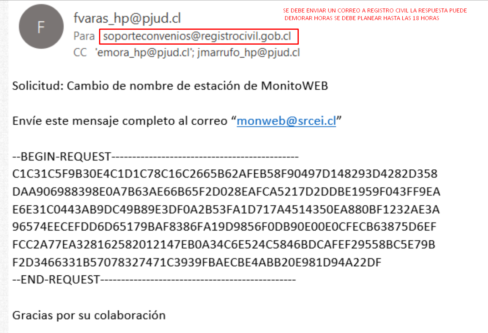Paso 6: Pegar código de respuesta
- Volver a opciones avanzadas
- Seleccionar: Pegar respuesta del portapapeles
- Aceptar
- Cerrar completamente Internet Explorer
Paso 7: Configurar impresión local y remota
- Asignar la misma impresora en ambos campos
- Activar: Convertir certificado LA120 a HTML
- Activar vista preliminar HTML
Paso 8: Prueba final de funcionamiento
Navegar a:
https://monitoweb2.srcei.cl/monito
- Ingresar credenciales
- Realizar impresión de prueba
- Validar generación en PDF24
Descargar Procedimiento Oficial
Descargar PDF Monito Web 2Docflow – Sistema de Digitalización y Gestión Documental
Procedimiento oficial de instalación y activación de Docflow 5, basado en el documento institucional. Incluye instalación del complemento, Imaging for Windows y copia final de ejecutables requeridos.
Paso 1: Acceder al Repositorio de Instalación
Ingresar a la siguiente ruta:
Z:\REPOSITORIO MESA DE AYUDA\Repositorio\Aplicaciones Corporativas\Docflow
Copiar el archivo DocflowPJUD.exe y ejecutarlo.
Paso 2: Confirmar Instalación
Presionar Aceptar y luego Siguiente en el asistente.
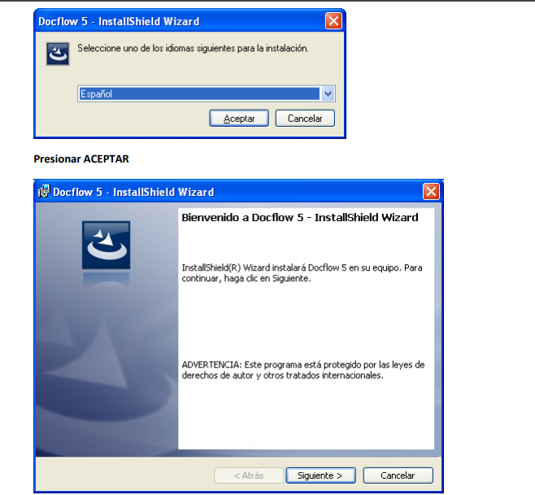Paso 3: Instalar complemento
Seleccionar Sí cuando se solicite instalar el complemento adicional.
Paso 4: Instalación Imaging for Windows
Esperar carga inicial → presionar Siguiente, luego YES, y nuevamente Next respetando la ruta por defecto.
Paso 5: Finalizar Instalación
Cuando el instalador solicite seleccionar NO en la ventana final, presionar NO y luego Finalizar.
Paso 6: Copiar ejecutables finales
Desde la carpeta:
Z:\REPOSITORIO MESA DE AYUDA\Repositorio\Aplicaciones Corporativas\Docflow
Copiar los archivos:
- DOCFLOW.exe
- LDPE5G.exe
A la ruta:
C:\Archivos de programa\Tecnologia y Servicios\Docflow 5\
Paso 7: Crear acceso directo
Crear acceso directo en el escritorio de DOCFLOW.exe.
Lan Messenger – Mensajería Interna PJUD
Procedimiento oficial de instalación y configuración de Lan Messenger, utilizado por funcionarios del Poder Judicial para comunicación interna y transferencia de archivos.
Paso 1: Descargar instalador desde NAS
Ir a la siguiente ruta:
Z:\REPOSITORIO MESA DE AYUDA\Repositorio\Aplicaciones Corporativas\lanChat
Ejecutar lanmsngr.exe.
Paso 2: Ejecutar instalador
Seleccionar Run o Ejecutar.
Paso 3: Completar instalación
Avanzar con Siguiente → Siguiente → Instalar.
Paso 4: Iniciar Lan Messenger
Seleccionar Iniciar Lan Messenger antes de finalizar el instalador.
Paso 5: Verificar estado del usuario
En la ventana principal confirmar que el estado aparece como Disponible.
Descargar Procedimiento LAN Messenger (PDF)
Descargar Procedimiento LAN MessengerSIGPER – Sistema de Gestión de Personal
Procedimiento oficial para configuración, habilitación de complementos, instalación de Chrome Portable y validación de funcionamiento del sistema corporativo SIGPER.
PASO 1: Ejecutar acceso directo SIGPER
Luego de ejecutar el archivo Configuración V12, en el escritorio debe encontrarse el acceso directo SIGPER. Haga doble clic para abrirlo.
PASO 2: Habilitar complementos en Internet Explorer
El sistema abrirá Internet Explorer. Debe ingresar a:
- Herramientas → Administrar complementos
- Verificar que Java esté habilitado
- Habilitar todos los complementos disponibles
PASO 3: Configurar ActiveX y Seguridad
Luego debe revisar opciones de seguridad:
- Herramientas → Opciones de Internet
- Pestaña Seguridad → Sitios de Confianza
- Habilitar todas las funciones de ActiveX y automatización
PASO 4: Ingreso al Sistema SIGPER
Una vez configurado IE, vuelva a la pantalla inicial e ingrese con sus credenciales institucionales.
PASO 5: Instalación Chrome Portable compatible con SIGPER
Descargar desde el NAS:
Z:\REPOSITORIO MESA DE AYUDA\Repositorio\FV_MDA\Programas para Sistemas\Chrome Portable
Copiar el archivo ZIP y pegarlo en: C:\Soporte, luego extraerlo.
PASO 6: Usar Chrome Portable exclusivo para SIGPER
Chrome portable posee compatibilidad especial, incluyendo Adobe Flash Player para SIGPER.
Debe ingresar mediante el siguiente enlace:
http://zsigprod01.cadm.pjud/sigperwebx-prod/servlet/hlogin
Se recomienda anclarlo a la barra de tareas.
PASO 7: Crear acceso directo y pruebas con el usuario
Finalmente, se debe verificar junto al usuario que los módulos carguen correctamente y crear acceso directo en el escritorio.
RHRED – Sistema de Recursos Humanos del Poder Judicial
El Sistema RHRED es la plataforma institucional del Poder Judicial destinada a la administración, consulta y gestión de información sobre funcionarios, contratos, asistencia y documentación interna. Esta guía está basada íntegramente en el procedimiento oficial entregado en PDF.
Paso 1: Ingresar al Sistema RHRED
Abrir Google Chrome y dirigirse al enlace oficial:
http://zsigprod06.cadm.pjud/suitesrh/servlet/com.suite.login
Paso 2: Configuración de sitios y permisos
Según el documento oficial, RHRED requiere permisos especiales dentro de Chrome para permitir la correcta visualización de información.
Verificar en:
- Configuración del sitio
- Permitir contenido no seguro
- Permitir descargas
- Habilitar ventanas emergentes
Paso 3: Configurar apertura de PDF en Chrome
RHRED utiliza documentos PDF que deben abrirse directamente en el navegador. Para evitar errores se debe activar:
Abrir archivos PDF en Chrome (segunda opción)
Paso 4: Pruebas finales con usuario
Luego de aplicar toda la configuración:
- Cerrar sesión en RHRED
- Volver a ingresar con el usuario
- Abrir un documento PDF desde RHRED
**Debe abrir correctamente en Chrome sin bloqueos.**
Descargar Procedimiento Oficial PDF
Descargar Procedimiento RHRED (PDF)Zimbra VIP – Actualización de Conector y Autocompletar
Procedimiento oficial para actualizar el conector de Zimbra en Outlook, respaldar los datos del buzón y restaurar el autocompletar de correo.
Resumen de pasos
- 1) Revisar si Outlook/Zimbra es 32 o 64 bits, perfiles y ruta de archivos de datos.
- 2) Descargar e instalar el nuevo Zimbra Outlook Connector (32 o 64 bits).
- 3) Cambiar extensión del archivo .ZDB a .PST y de .idm a .BAK.
- 4) Respaldar archivo de autocompletar de Outlook (varias copias).
- 5) Eliminar la cuenta actual de Zimbra en Outlook (solo después de respaldar).
- 6) Crear nuevamente la cuenta Zimbra (nuevo servidor, mismos datos de usuario).
- 7) Sincronizar la nueva cuenta y restaurar el autocompletar.
- 8) Generar archivo de autocompletar nuevo.
- 9) Reemplazar el archivo nuevo por una de las copias antiguas y probar.
Paso 1: Revisar 32/64 bits, perfiles y archivo de datos
Abrir Panel de control → Correo y comprobar si Outlook muestra indicador de 32 bits (si dice “32 bits”) o de 64 bits (cuando no indica nada).
Desde el mismo cuadro abrir Perfiles y validar que exista un perfil claro de Zimbra. Luego entrar a Cuentas de correo electrónico y confirmar que hay una cuenta MAPI de Zimbra establecida como predeterminada.
En la pestaña Archivos de datos verificar que existe un archivo de datos .ZDB asociado a la cuenta. Tomar nota de la ruta completa de ese archivo, ya que será el respaldo principal.
Importante: si no hay un perfil claramente definido o la cuenta MAPI no está clara, detener el procedimiento y derivar a nivel central.
Paso 2: Descargar e instalar Zimbra Outlook Connector 8.8.7
Descargar el conector según la arquitectura detectada en el paso anterior:
-
64 bits:
https://files.zimbra.com/downloads/zco/8.8.7/1739/ZimbraConnectorOLK_8.8.7.1739_x64.msi -
32 bits:
https://files.zimbra.com/downloads/zco/8.8.7/1739/ZimbraConnectorOLK_8.8.7.1739_x86.msi
Ejecutar el instalador correspondiente, aceptar el contrato de licencia y seguir el asistente hasta finalizar.
Si el instalador muestra advertencias de procesos abiertos (por ejemplo, ventana de “Correo” aún abierta), cerrar todas las ventanas indicadas y reintentar hasta que la instalación concluya correctamente.

Paso 3: Cambiar extensión del archivo .ZDB y archivos .idm
Ir a la carpeta donde se encuentra el archivo .ZDB anotado en el paso 1.
- Ubicar el archivo de datos principal de Zimbra (extensión .ZDB).
- Cambiar su nombre agregando la extensión .PST
(por ejemplo:
Zimbra1.zdb→Zimbra1.zdb.pst). - En la misma carpeta localizar los archivos con extensión .idm
y agregarles la extensión .bak
(por ejemplo:
Zimbra1.idm→Zimbra1.idm.bak).

Paso 4: Respaldar archivo de Autocompletar
Localizar el archivo de autocompletar de Outlook Stream_Autocomplete_x_xx… .DAT. Este archivo se encuentra en:
C:\Users\<usuario>\AppData\Local\Microsoft\Outlook\RoamCache
Una forma rápida es abrir el menú Inicio, escribir %appdata% y presionar Enter. Desde la carpeta Roaming subir un nivel a AppData y luego entrar en Local → Microsoft → Outlook → RoamCache.
Identificar el archivo Stream_Autocomplete_… .DAT de mayor tamaño y generar varias copias en el mismo directorio (Ctrl+C, Ctrl+V varias veces) para tener respaldos.

Paso 5: Eliminar la cuenta actual de Zimbra en Outlook
Este paso solo debe ejecutarse después de haber cambiado la extensión del ZDB y respaldado el autocompletar. Borrar la cuenta sin estos respaldos elimina el archivo ZDB y sus asociados.
- Abrir nuevamente Panel de control → Correo.
- Entrar a Cuentas de correo electrónico, seleccionar la cuenta MAPI de Zimbra.
- Presionar Quitar y aceptar las advertencias.
Si Outlook indica que no hay otro archivo de datos (cuando solo existía el ZDB), crear primero un nuevo archivo de datos .PST, asignarlo y luego repetir la eliminación de la cuenta de Zimbra.
Paso 6: Crear nuevamente la cuenta Zimbra (nuevo conector)
En el mismo cuadro de Cuentas de correo electrónico, elegir Nuevo….
- Seleccionar Cuenta → Otros → Zimbra Collaboration Server.
- Elegir Configuración manual.
- En la ventana de configuración de Zimbra, completar los campos con los mismos datos de usuario (dirección de correo, contraseña) pero usando el servidor que corresponda a la nueva plataforma.
En las opciones avanzadas, definir la carpeta donde se guardará el nuevo perfil, idealmente en la misma ubicación donde se encontraba el Zimbra anterior o en una ruta clara dentro de Disco D: (datos).
Aplicar los cambios y finalizar el asistente.
Paso 7: Sincronizar nueva cuenta
Abrir Outlook con la nueva cuenta de Zimbra configurada y dejar que comience el proceso de sincronización (descarga de buzón).
Aceptar todos los mensajes que Outlook presente durante el primer inicio después del cambio de conector.
Paso 8: Generar nuevo archivo de Autocompletar
Cerrar Outlook y confirmar en el Administrador de tareas que el proceso OUTLOOK.EXE ya no está en ejecución. No finalizarlo manualmente.
Volver a abrir Outlook y enviar un correo de prueba a cualquier dirección
(por ejemplo: usuario@pjud.cl). Al terminar, cerrar nuevamente Outlook
y esperar a que el proceso se detenga por completo.
Regresar a la carpeta de autocompletar RoamCache y verificar que se haya creado un nuevo archivo Stream_Autocomplete_… .DAT de tamaño pequeño (correspondiente al nuevo perfil).
Paso 9: Restaurar Autocompletar antiguo
Copiar el nombre exacto del archivo de autocompletar nuevo (el pequeño), eliminarlo y luego tomar una de las copias grandes realizadas en el paso 4.
Renombrar esa copia con el mismo nombre del archivo nuevo que se borró, de manera que el autocompletar antiguo quede asociado al perfil actual.
Abrir nuevamente Outlook y probar que las sugerencias de autocompletar aparecen correctamente. En caso de que no funcione, repetir el reemplazo utilizando otra de las copias del archivo.
Descargar Procedimiento Oficial Zimbra VIP (PDF)
Descargar Procedimiento Zimbra VIP (PDF)Procedimientos Sistemas Judiciales
Sistemas Disponibles
SITCI
Sistema Civil
SITCO
Sistema de Cobranza
SITLA
Sistema Laboral
SIAGJ
Sistema Reforma Procesal Penal
Gestión Penal
Sistema Judicial Penal
SITFA
Sistema Judicial Familia
Monito Web 2
Sistema de Certificados del Registro Civil
Docflow
Sistema de Digitalización y Gestión Documental
Lan Messenger
Mensajería interna (Chat corporativo)
SIGPER
Sistema de Gestión de Personal del Poder Judicial
RHRED
Sistema de Recursos Humanos
Zimbra VIP
Correo institucional VIP
Procedimientos Técnicos
Descripción: Este procedimiento detalla los pasos obligatorios para la configuración estandarizada de estaciones de trabajo PJUD4, garantizando la correcta operación y compatibilidad con sistemas judiciales que dependen de Internet Explorer 11 y Java versión 231.
El proceso automatizado cubre las siguientes áreas:
- Seguridad en IE: Ajustes de seguridad relajados, incluyendo Sitios de Confianza y ActiveX.
- Optimización de Windows: Parámetros de rendimiento (Energía) y desactivación del Control de Cuentas de Usuario (UAC).
- Conectividad: Configuración de acceso a la red judicial (DNS y Proxy) según la ubicación del usuario.
- Soporte: Activación de herramientas de soporte como la Cuenta Administrador y Monito web 2.
Paso 1: Acceder al Repositorio
Ingresar a Z:\REPOSITORIO MESA DE AYUDA\Repositorio\FV_MDA\Programas para Sistemas\CONFIGURACION 2025 y copiarlo a Disco Local C.
Paso 2: Ejecutar el Archivo de Configuración
Ejecutar CFG_PJUD4.bat con permisos de administrador.
Paso 3: Confirmar Ejecución
Aparecerá un mensaje de seguridad. Presionar Enter para continuar.
Paso 4: Seleccionar Tipo de Configuración
Seleccionar opción 1 y marcar “Eliminar Configuración Personal”.
Paso 5: Configurar Ubicación y Proxy
Seleccionar Tribunal, omitir Monito Web si no corresponde, y elegir el proxy adecuado.
Paso 6: Instalar Librerías y Registros
Se instalarán librerías DLL y registros necesarios. Seleccionar Aceptar en cada ventana.
Paso 7: Instalar AmiOffice V3
Seleccionar 1) Instalar y aceptar todas las ventanas emergentes.
Paso 8: Instalación de Plugins
Se instalan complementos adicionales para compatibilidad completa.
Este procedimiento soluciona errores del módulo Agenda de SIAGJ mediante carga de librerías y registro manual de MSCOMCTL.OCX, según documento oficial.
Paso 1: Acceder al Repositorio NAS
Dirígete a la siguiente ruta en el NAS:
Z:\REPOSITORIO MESA DE AYUDA\Repositorio\FV_MDA\Programas para Sistemas\SIAGJ SOLUCION DE AGENDA
Paso 2: Copiar archivo MSCOMCTL.OCX
Copiar el archivo MSCOMCTL.OCX dentro de:
C:\Windows\SysWOW64
Paso 3: Abrir CMD como Administrador
Presiona tecla Windows → escribe cmd → clic derecho → Ejecutar como administrador.

Paso 4: Registrar la librería MSCOMCTL.OCX
En la consola, escribe el siguiente comando:
regsvr32 C:\Windows\SysWOW64\MSCOMCTL.OCX
Paso 5: Confirmación de Registro
Si todo fue correcto, aparecerá un mensaje indicando que el archivo ha sido registrado correctamente.
Procedimiento oficial para reconfigurar completamente el perfil de usuario (“Perfilazo”), restaurando estructura de carpetas, registro y configuración asociada. Basado en el documento original entregado por Mesa de Ayuda HP.
Paso 1: Abrir Panel de Control
Acceder a Panel de Control y escribir “Mail” para abrir Configuración de Correo.
Paso 2: Cuentas de correo
Abrir “Cuentas de correo electrónico” y seleccionar la cuenta del usuario.
Paso 3: Usar herramienta Revealer
Desde el NAS abrir Revealer para obtener la contraseña del correo.

Paso 4: Guardar contraseña y revisar ubicación del PST
Volver a Configuración de correo → Archivos de datos → revisar ruta del PST.
Paso 5: Configurar cuenta Administrador
Abrir Administración de equipos → Usuarios y grupos locales → cambiar contraseña del Administrador.
Paso 6: Ingresar a la cuenta Administrador
Cerrar sesión e ingresar con usuario: Administrador y clave establecida.
Paso 7: Renombrar carpeta del usuario
Ir a C:\Usuarios → Renombrar carpeta del usuario agregando .old.
Paso 8: Generar nuevo perfil desde Internet Explorer
Con tecla SHIFT presionada → clic derecho en IE → “Ejecutar como otro usuario”.
Paso 9: Verificar creación de carpeta TEMP y nuevo usuario
En C:\Usuarios deben aparecer las carpetas: usuario nuevo + TEMP.
Paso 10: Editar Registro
Abrir Regedit → ir a: HKEY_LOCAL_MACHINE\SOFTWARE\Microsoft\Windows NT\CurrentVersion\ProfileList → eliminar la clave que termina en .bak.
Paso 11: Ejecutar nuevamente IE como el usuario
Repetir: SHIFT + clic derecho → ejecutar como otro usuario.
Paso 12: Iniciar sesión con el usuario final
Cerrar sesión → seleccionar “Otro usuario” e ingresar con credenciales reales.

Este procedimiento permite corregir errores al abrir documentos en el Sistema Corporativo SITCI, ajustando las asociaciones de archivos mediante la herramienta FileTypeMan.
📄 Documento original adjunto: Procedimiento FileTypeMan SITCI (Referencia interna) :contentReference[oaicite:0]{index=0}
Paso 1: Abrir la herramienta FileTypeMan
Ingresar a la carpeta:
C:\Soporte\FileTypeMan
Si no existe, se encuentra en el NAS:
Z:\REPOSITORIO MESA DE AYUDA\Repositorio\FV_MDA\Programas para Sistemas\filetypesman
Ejecutar el archivo .exe como Administrador.
Paso 2: Buscar extensiones de Word
Presionar Ctrl + F y buscar las siguientes extensiones:
- .doc
- .dot
- .docx
Paso 3: Configurar opciones recomendadas
Dar doble clic a cada extensión y activar las siguientes opciones:
- Open this file type immediately after download, without confirmation
- Don’t open inside a Web browser window
Recomendación Final
- Verificar que los documentos de SITCI ahora abren correctamente.
- Realizar este procedimiento solo con permisos de Administrador.
- Documentar los cambios realizados para auditorías o soporte.
Este procedimiento permite buscar archivos PST en todos los discos del equipo, utilizando el script oficial de Mesa de Ayuda HP. Útil para recuperación, reparación o respaldo del correo Outlook.
Paso 1: Acceder al Repositorio NAS
Ir a la ruta:
Z:\REPOSITORIO MESA DE AYUDA\Repositorio\FV_MDA\Herramientas optimizacion de mesa y otros\ Procedimiento Buscar PST.bat
Paso 2: Ejecutar el Script
Hacer clic derecho sobre Procedimiento Buscar PST.bat y seleccionar Ejecutar como administrador.

Paso 3: Interpretación de resultados
Si existen archivos PST, se mostrarán sus rutas exactas dentro de la ventana CMD. Esta información permite identificar cuál corresponde al perfil del usuario o cuál es el más reciente.
Paso 4: Código del Script (Referencia)
@echo off
echo Buscando archivos PST en todos los discos y en la papelera de reciclaje...
echo.
echo Archivos encontrados en el disco C:
dir C:\*.pst /s /b
echo.
echo Archivos encontrados en el disco D:
dir D:\*.pst /s /b
echo.
echo Archivos encontrados en otros discos:
for %%D in (E F G H I J K L M N O P Q R S T U V W X Y Z) do (
if exist %%D:\ (
echo.
echo Archivos encontrados en el disco %%D:
dir %%D:\*.pst /s /b
)
)
echo.
pause
Nota: Se recomienda respaldar los PST antes de realizar reparaciones.
Procedimiento oficial de mantenimiento profundo del sistema, basado en el documento de limpieza extrema de Mesa de Ayuda HP. Incluye eliminación de temporales, optimización del sistema, SFC Scannow, DISM, habilitación de núcleos y ejecución de herramientas de memoria RAM.
Paso 1: Acceder a la ruta del procedimiento
Ir a:
Z:\REPOSITORIO MESA DE AYUDA\Repositorio\01.-Procedimientos mesa de ayuda\Procedimiento Limpieza actualizada
Paso 2: Ejecutar como Administrador
Dar permisos administrativos para poder ejecutar todas las funciones.
Paso 3: Seleccionar la Opción 1 (Recomendada)
Inicia limpieza de temporales y ajustes de rendimiento.
Paso 4: Limpieza de Temporales
Se eliminarán archivos temporales de Windows y AppData.
Paso 5: Ejecución de SFC /Scannow
Analiza y repara archivos del sistema. Puede tardar varios minutos.
Paso 6: Ejecución DISM /Restorehealth
Repara la imagen del sistema. Recomendado ejecutarlo individualmente.
Paso 7: Limpieza RAM (RamCleaner)
Seleccionar limpieza básica para liberar memoria RAM.
Paso 8: Deshabilitar servicios innecesarios
Deshabilita WSearch, BITS, Sysmain y servicios de actualización.
Paso 9: Limpieza de Prefetch
Elimina archivos obsoletos para mejorar el rendimiento, Windows recreará la carpeta automáticamente.
Paso 1: Descargar Microsoft Edge
Ingresar al sitio oficial de descarga:
https://www.microsoft.com/es-es/edge/download
Paso 2: Instalar Microsoft Edge
Ejecute el instalador descargado y continúe hasta finalizar.
Paso 3: Ejecutar script de restauración
Z:\REPOSITORIO MESA DE AYUDA\Repositorio\FV_MDA\Programas para Sistemas\Procedimiento Solucion Internet Explorer\Configuracion_Iexplorer.bat
Paso 4: Aceptar Control de cuentas (UAC)
Paso 5: Generación de accesos directos VBS


Guía de Procedimientos de Aplicativos
Procedimientos Disponibles
- AdobeReaderDC (VersionAntigua).exe
- Instalar Pack de fuentes de idioma español
- Instalar bloqueador de actualizaciones de Adobe
- Abrir PDF de prueba y aceptar términos y firma
- Aceptar el acuerdo de licencia.
- Seleccionar carpeta donde se guardarán los archivos.
- Actualizaciones Críticas
- Actualizaciones Recomendadas
- Actualizaciones Opcionales
Descripción
Procedimiento oficial para instalar PDF24 Creator, basado en el documento original. Este software permite crear, unir, editar y convertir archivos PDF.
Paso 1: Descargar instalador oficial
Ingresamos a la página oficial: https://tools.pdf24.org/es/creator
Paso 2: Seleccionar PDF24 Creator 11.10.1 EXE x64
Paso 3: Ejecutar instalador descargado
Paso 4: Aceptar el acuerdo de licencia
Paso 5: Presionar “Siguiente” en las pantallas iniciales
Paso 6: Desmarcar componentes no necesarios
Desmarcar las opciones sombreadas (según el PDF).
Paso 7: Instalar
Paso 8: Finalizar instalación
Descripción
Procedimiento estándar para la instalación, configuración inicial y uso básico de Adobe Acrobat DC Versión CAPJ, herramienta utilizada en el Poder Judicial para visualizar, editar y gestionar documentos PDF.
Paso 1: Ingresar al Repositorio NAS
Ir a la ruta:
Z:\REPOSITORIO MESA DE AYUDA\Repositorio\Aplicaciones Estándar\Adobe Reader DC
Copiar la carpeta completa y pegarla en:
C:\SOPORTE\
Paso 2: Verificar y desinstalar versión anterior
Ingresar a Panel de Control → Programas y características.
Buscar Adobe Acrobat / Adobe Reader y desinstalar la versión existente.
Paso 3: Instalar en el siguiente orden
Paso 4: Completar instalación
El instalador es sencillo, solo debes aceptar términos → siguiente → siguiente → instalar.
Realizar el mismo proceso en todos los archivos del paquete de instalación.
Guía oficial para el uso de HP Image Assistant (HPIA), herramienta que permite actualizar controladores, BIOS, firmware y software de equipos HP, garantizando cumplimiento de estándares corporativos.
Paso 1: Instalación de HPIA
Ejecutar el instalador de HP Image Assistant y seguir las instrucciones mostradas en pantalla.
Durante la instalación:
Paso 2: Escaneo del Sistema
Una vez abierto HPIA, seleccionar Analizar imagen y presionar Analizar.
El sistema comenzará a realizar un análisis completo del hardware y software del equipo.
Paso 3: Revisión de Actualizaciones Disponibles
HPIA mostrará un listado de controladores y componentes que requieren actualización.
Debe ingresar a la pestaña Recomendaciones.
Paso 4: Descarga e Instalación de Actualizaciones
Seleccionar las actualizaciones deseadas y presionar Descargar.
Recomendación corporativa: elegir Descargar SoftPaq(s), extraer archivos e instalar.

Paso 5: Monitoreo del Proceso
HPIA mostrará el progreso de descarga e instalación en tiempo real.
Paso 6: Verificación Final
Una vez instaladas las actualizaciones, si aparece un mensaje de error, simplemente reiniciar el equipo y volver a ejecutar HPIA para confirmar que el sistema quedó actualizado.
Paso 1: Copiar carpeta Oracle11g
Ir a la ruta:
Z:\REPOSITORIO MESA DE AYUDA\Repositorio\FV_MDA\Programas para Sistemas\Oracle\
Copiar la carpeta y pegarla en C:\
Crear carpeta Oracle11g.
Paso 2: Ejecutar setup.exe
Paso 3: Clic en “Siguiente”
Paso 4: Seleccionar “Personalizado”
Paso 5: Directorio Base
Ingresar ruta C:\ORACLE11G, luego “Siguiente”.
Paso 6: Marcar requisitos con error
Paso 7: Seleccionar “Seleccionar Todo”

Paso 8: Repetir “Seleccionar Todo”

Paso 9: Revisar resumen e instalar
Paso 10: Instalar y esperar
Paso 11: Configuración típica
Paso 12: Finalizar instalación
Paso 13: Copiar "tnsnames.ora"
Desde:
C:\ORACLE11G\product\11.1.0\client_1\Network\Admin
Java Runtime Environment (JRE) 1.8.0_231 es la versión certificada por la CAPJ para garantizar compatibilidad con sistemas judiciales que dependen de applets y librerías heredadas.
Paso 1: Ingresar al Repositorio NAS
Acceder a la siguiente ruta:
Z:\REPOSITORIO MESA DE AYUDA\Repositorio\FV_MDA\Programas para Sistemas\Java
Paso 2: Ejecutar Instalador
Hacer clic derecho en jre-8u231-windows-i586.exe y seleccionar Ejecutar como administrador.
Paso 3: Aceptar Términos e Instalar
Aceptar los términos de licencia y proceder con la instalación.
Paso 4: Verificar Instalación
Una vez instalado, buscar en la barra de inicio “Acerca de Java” para verificar versión 1.8.0_231.
Procedimiento oficial para instalación de Microsoft Office 365 Corporativo, garantizando compatibilidad institucional y correcta activación mediante Microsoft Authenticator.
Paso 1: Ingresar al Repositorio NAS
Ingresar a la siguiente ruta:
Z:\REPOSITORIO MESA DE AYUDA\Repositorio\FV_MDA\Office\Office_365_Oficial_CAPJ\ Instalador Microsoft 365 (Copiable).bat
Copiar la carpeta completa a Disco Local C → Carpeta Soporte.
Paso 2: Ejecutar instalador como Administrador
Hacer clic derecho en Instalador Microsoft 365 (Copiable).bat → seleccionar Ejecutar como administrador.
El instalador requiere estar en el dominio poderjudicial.cl y contar con permisos administrativos.
Paso 3: Instalación de Office 365
El instalador descargará e instalará la suite Office 365 automáticamente.
Paso 4: Activación mediante Microsoft Authenticator
La activación se realiza con el usuario presente. Deberá aprobar un código enviado a su aplicación Microsoft Authenticator en el celular.
Procedimiento oficial para instalación de Microsoft Office 2021 Corporativo, garantizando compatibilidad institucional y activación mediante dominio Poder Judicial.
Paso 1: Ingresar al Repositorio NAS
Ruta del instalador:
Z:\REPOSITORIO MESA DE AYUDA\Repositorio\FV_MDA\Office\Office 2021 CAPJ Instalador Office 2021(Copiable).bat
Copiar la carpeta completa a C:\Soporte.
Paso 2: Ejecutar instalador como Administrador
Hacer clic derecho sobre el archivo Instalador Office 2021 (Copiable).bat y seleccionar Ejecutar como administrador.
El instalador requiere estar en el dominio poderjudicial.cl.
Paso 3: Instalación de Office 2021
El instalador descargará e instalará Office 2021 automáticamente.
Paso 4: Activación de Office 2021
La activación se realiza automáticamente mediante el dominio institucional poderjudicial.cl.
Procedimiento oficial para configuración de cuentas Outlook utilizando servidor POP3/SMTP institucional. Basado en el documento original Mesa de Ayuda HP.
Paso N°1: Abrir Panel de Control → Cuentas de Usuario → Mail (Microsoft Outlook)
Ingresar al panel para administrar perfiles de Outlook.
Paso N°2: Cuentas de correo → Nuevo → Configuración manual → POP o IMAP
Ingresar los datos de cuenta e iniciar la configuración manual como muestra el documento.
Paso N°3: Agregar usuario, contraseña y configurar puertos
Completar configuración manual: • Servidor entrante (POP3): 995 • Servidor saliente (SMTP): 587 • Habilitar casilla "Mi servidor de salida requiere autenticación"
Paso N°4: Probar configuración de la cuenta
Outlook debe validar conexión a POP y SMTP antes de finalizar.
Instructivo oficial para la configuración del Doble Factor de Autenticación utilizado para acceder de forma segura a la VPN del Poder Judicial. Este procedimiento incluye la habilitación de Microsoft Authenticator y el registro de número telefónico.
Paso 1
Acceder a: https://mysignins.microsoft.com/security-info
Ingresar usuario y contraseña del dominio.
Paso 2
En la pestaña de seguridad seleccionar “Agregar método”.
Paso 3
Seleccionar método "Aplicación de autenticación".
Paso 4
El sistema pedirá Microsoft Authenticator. Si está instalada, presionar Siguiente.
Paso 5
Se mostrará un código QR. Debe escanearse con la app Authenticator.
Paso 6
Abrir Authenticator → Escanear código QR → seleccionar cuenta profesional.
Paso 7
Permitir el uso de la cámara y escanear el QR mostrado en el PC.
Paso 8
Después del escaneo, se enviará una notificación al móvil. Debe aprobarla.
Paso 9
La aprobación será confirmada como exitosa.
Paso 10
El método quedará registrado correctamente.
Paso 11
Agregar nuevo método → seleccionar Teléfono.
Paso 12
Registrar número telefónico.

Paso 13
Confirmación de registro del número.
Paso 14
Abrir cliente Cisco VPN AnyConnect → conectar a vpn.pjud.cl.
Paso 15
Seleccionar grupo: VPN-DOBLE-FACTOR.
Paso 16
Ingresar credenciales de dominio.
Paso 17
Si demora más de 30 segundos, usar modo incógnito o Firefox.
Paso 18
Se enviará un PUSH al Authenticator. Ingresar el número mostrado.
Paso 19
Conexión exitosa a la VPN del Poder Judicial.
Impresoras y Equipos de Digitalización
Manuales oficiales de instalación, configuración y soporte para impresoras HP, Samsung y escáneres HP Flow.
Procedimiento oficial de instalación y configuración de la impresora HP Laser 408dn.
Paso 1: Descargar Driver
Ir a la siguiente ruta:
Z:\REPOSITORIO MESA DE AYUDA\Repositorio\Drivers\Impresoras\HP\29.- HP Laser 408dn/
Ejecutar el archivo del driver y seleccionar Siguiente.
Paso 2: Aceptar Acuerdos
Activar ambas casillas de aceptación de licencia y recop. de datos.
Luego presionar Siguiente.
Paso 3: Selección de tipo de conexión
Elegir si la impresora se instalará vía USB o RED.
Luego presionar Siguiente.
Paso 4: Selección de utilidades
Seleccionar todas las utilidades disponibles y presionar Siguiente.
Paso 5: Finalizar Instalación
Esperar el proceso. Seleccionar Activar Monitor de Estado y luego Finalizar.
Paso 6: Ingresar a Propiedades de Impresión
Panel de Control → Dispositivos e impresoras → Clic derecho en HP Laser 408 → Propiedades de impresión.
Paso 7: Configurar Valores
Ir a: Opciones Avanzadas → Valores predeterminados de impresión.
Paso 8: Ajustes de Papel
En la pestaña Papel seleccionar:
• Tamaño de papel usado por el tribunal (Oficio, Carta, etc.)
• Tipo de papel: Papel Normal
Cambio de tóner
- Abrir la cubierta frontal.
- Retirar tóner usado.
- Desembalar el tóner nuevo.
- Retirar protector.
- Remover precinto.
- Instalar el tóner nuevo y cerrar la cubierta.
Procedimiento oficial de instalación y configuración de la impresora Samsung ML-4020ND.
Paso 1: Ubicar el instalador
- Acceder a: Z:\REPOSITORIO MESA DE AYUDA\Repositorio\Drivers\Impresoras\Samsung\Samsung M4020ND
- Entrar en: Windows
- Ejecutar: 4020ND_SPL_PCL_V3.13.13.00.01_CDV1.39.exe
- Presionar Siguiente
Paso 2: Aceptar licencia
- Leer el contrato de licencia.
- Seleccionar Acepto los términos.
- Presionar Siguiente.
Paso 3: Seleccionar tipo de conexión
Elegir cómo se conectará la impresora:
- USB
- Red
- Otra conexión
Paso 3.1: Instalación mediante USB
- Conectar el cable USB al PC.
- Esperar detección automática.
- Continuar al paso 4.
Paso 3.2: Instalación mediante red
- Seleccionar: No, mi impresora ya está conectada a la red.
- Presionar Siguiente

Paso 3.3: Búsqueda automática en la red
- El instalador buscará la impresora.
- Seleccionarla cuando aparezca.
- Presionar Siguiente.
Paso 3.3.1: Si la impresora NO aparece
- Seleccionar: Entrada directa
Paso 3.3.2: Ingresar IP manualmente
- Ingresar la IP asignada.
- Presionar Siguiente.
Paso 4: Selección de software
- Mantener valores por defecto.
- Presionar Siguiente.
Paso 5: Finalizar instalación
- Activar: Habilitar monitor de estado
- Presionar Finalizar
Configuración del papel
- Tamaño original: Oficio 8.5 x 13
- Tamaño salida: Igual al original
- Origen: Bandeja 1
- Tipo: Normal
Configuración física en la impresora
- Bandeja MU: A4
- Bandeja 1: Folio

Procedimiento oficial para la instalación y configuración del escáner HP Digital Sender Flow 8500fn2, incluyendo software HP Scan, paquete TWAIN y ajustes de escaneo normal.
Paso 1: Copiar instaladores desde el repositorio Nas
Copiar los archivos HP Scan and Twain Package for USB_Win10.exe e IDRS-15.2.1122.0-IDRS.msi desde la ruta:
Z:\REPOSITORIO TECNICO TERRENO\Controladores\Scanner\Hp Scanner 8500 fn2
Copiarlos al directorio local C:\Soporte del equipo donde se configurará el escáner.
Paso 2: Conectar el escáner al equipo
Conectar el escáner HP Digital Sender Flow 8500fn2 al equipo utilizando un cable USB directo.
Paso 3: Instalar HP Scan and Twain Package
Ejecutar como administrador el archivo HP Scan and Twain Package for USB_Win10.exe ubicado en C:\Soporte y seguir las instrucciones del asistente de instalación.
Dejar todas las opciones en sus valores predeterminados hasta finalizar.
Paso 4: Instalar IDRS
Ejecutar el instalador IDRS-15.2.1122.0-IDRS.msi desde C:\Soporte. Este componente se instalará y cerrará automáticamente al finalizar.
Paso 5: Abrir la aplicación HP Digital Sender Flow 8500fn2
Una vez instalado el software, ubicar en el escritorio el acceso directo HP Digital Sender Flow 8500fn2 (USB) y ejecutarlo.
Esperar a que la aplicación reconozca el escáner conectado por USB.
Paso 6: Configurar atajo de “Escaneo normal”
En la ventana principal de HP Scan, seleccionar el atajo “Escaneo normal” y configurar los parámetros como sigue:
- Tipo de elemento: Documento
- Lado de página: 1 cara (frontal)
- Tamaño de página: Carta (8,5 x 11 pulgadas)
- Origen: Alimentador de documentos, si está cargado
- Imagen - Modo de color: Color
- Destino - Tipo de archivo: PDF
- Enviar a: Carpeta local/red (definir ruta según tribunal o usuario)
Guardar la configuración y realizar una prueba de escaneo para confirmar que se genera correctamente el documento PDF en la carpeta configurada.
Procedimiento oficial para la instalación, configuración inicial, asignación de IP, bandejas y controlador de la impresora HP E40040dn.
Paso 1: Requisitos previos
- Impresora HP E40040dn
- Cable de poder MAGIC
- Cable USB o Ethernet según instalación
- Etiqueta de hostname (formato HP60XXX)
- Controlador HP Universal Printing PCL6 v7.3
- IP asignada por PJUD (finaliza entre .40 y .50)
Paso 2: Instalación física
- Desembalar impresora y retirar cintas naranjas.
- Cargar papel oficio en la bandeja 2.
- Conectar cable de poder y red (si aplica).
- Encender equipo y seguir asistente inicial.
Paso 3: Configuración inicial
- Idioma: Español
- Zona horaria: GMT -4 Santiago
- Fecha/Hora correcta
- AutoSend: No
- Impresión desde USB: No
Paso 4: Configuración de nombre de host
Ruta: Configuración → Ethernet → TCP/IP → Nombre de host
- Asignar nombre: HP60XXX
Paso 5: Validación de red (si es por Ethernet)
- Esperar que obtenga IP por DHCP.
- Validar en: Ethernet → Información
Paso 6: Configurar IP manual
Ruta: Ethernet → Configuración IPv4 → Método → Manual
Ingresar IP asignada por PJUD.
Paso 7: Configuración de bandejas
- Bandeja 1: Carta
- Bandeja 2: Oficio 8.5 × 13
Paso 8: Actualización de firmware
- Insertar pendrive con firmware.
- Ir a: Herramientas → Mantenimiento → Actualizar firmware USB
- No interrumpir el proceso.
Paso 9: Instalación del controlador
- Descomprimir controlador en C:\SOPORTE
- Ejecutar Install.exe
- Modo de instalación:
- USB → Modo USB Plug and Play
- Red → Modo Tradicional
- Agregar impresora por dirección IP
- Controlador: HP Universal Printing PCL6 (v7.3)
Paso 10: Configuración del controlador
- Tamaño papel: Oficio 8.5x13
- Origen papel: Selección automática
- Impresión a doble cara: No
Paso 11: Informar a administración de plataforma de impresión
Debe enviar:
- Nombre de la impresora
- Número de serie
- Versión de firmware
- Dirección IP
- Tribunal donde se instaló
Procedimiento oficial para la instalación, configuración inicial, asignación de IP, administración de bandejas e instalación de controlador de la impresora HP MFP E62655. Proyecto HP – PJUD5 (2024–2029).
1. Requisitos
- Impresora HP MFP E62655
- Cable de poder MAGIC
- Cable de red ethernet
- Etiquetas de nombre (HP60XXX)
- Pendrive con firmware actualizado
- Controlador HP Universal Printing PCL 6 v7.3
- Dirección IP entregada por coordinación HP
2. Instalación Física
- Desembalar cuidadosamente la impresora siguiendo la guía de instalación.
- Retirar cintas de seguridad y pestillos del tóner.
- Cargar papel en bandeja según configuración requerida.
- Encender la impresora y esperar el arranque inicial.
3. Configuración Inicial
- Idioma: Español
- Ubicación: Chile
- Zona Horaria: GMT -4 Santiago
- Formato 24 horas
- Impresión USB: No
4. Asignación de IP y Hostname
Asignar nombre HP60XXX correspondiente al tribunal.
- Ir a CONFIGURACIÓN > IPv4
- Seleccionar método MANUAL
- Ingresar IP entregada por PJUD
- Validar conexión
5. Configuración de Bandejas
- Bandeja 1: Oficio 8,5x13
- Bandeja 2: Carta 8,5x11
- Bandeja 3 (si existe): Oficio 8,5x13
6. Instalación del Controlador
- Ejecutar Install.exe (HP Universal Printing PCL 6 v7.3)
- Modo Tradicional
- Agregar impresora → Dirección IP
- Desmarcar “Consultar a la impresora”
- Seleccionar driver PCL6 v7.3
- Hostname
- IP asignada
- N° de serie
- Version firmware
- Tribunal instalado
Procedimiento oficial para la instalación, configuración y carga de drivers del equipo Lexmark MX711 en sistemas Windows 10 utilizados por el Poder Judicial. Se incluyen pasos de instalación por red, configuración de bandejas y parámetros generales de impresión.
Paso 1: Descargar controlador Lexmark MX711
- Ingresar al repositorio corporativo o página oficial de Lexmark.
- Descargar el driver correspondiente al modelo MX711 para Windows 10.
- Guardar el instalador en el directorio C:\Soporte.
Paso 2: Ejecutar instalador
- Ejecutar el instalador como Administrador.
- Seleccionar instalación mediante red.
- Aceptar términos y condiciones.
Paso 3: Detección automática de la impresora
- El instalador buscará la impresora dentro de la red del tribunal.
- Seleccionar el equipo Lexmark MX711 cuando aparezca.
- Presionar Siguiente.
Paso 3.1: Si la impresora NO aparece
- Seleccionar opción Agregar impresora mediante IP.
- Ingresar la IP asignada por el tribunal.
- Continuar la instalación.
Paso 4: Configuración de software adicional
- Mantener valores predeterminados.
- Instalar utilidades recomendadas por Lexmark.
- Finalizar instalación.

Paso 5: Configurar tamaño y bandejas
- Abrir "Dispositivos e impresoras".
- Botón derecho → Preferencias de impresión.
- Establecer tamaño: Folio 8.5 x 13.
- Configurar bandejas: MU → A4, Bandeja 1 → Folio.
Paso 6: Prueba de impresión
- Desde Windows, seleccionar “Imprimir página de prueba”.
- Confirmar que bandejas y tamaño coinciden con la configuración del tribunal.
- Validar estado del equipo en la interfaz Lexmark.